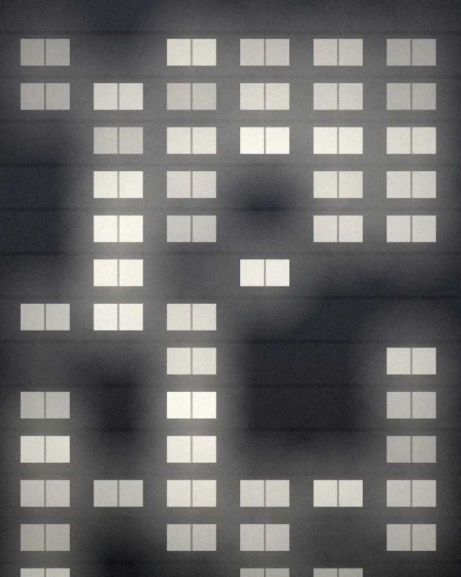
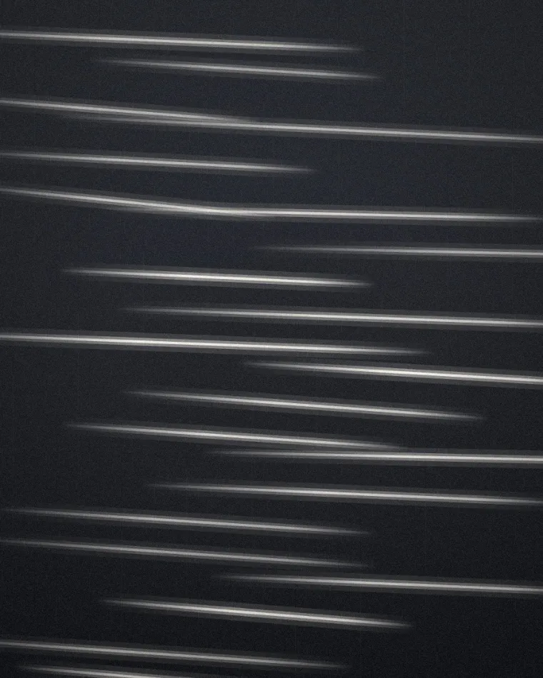
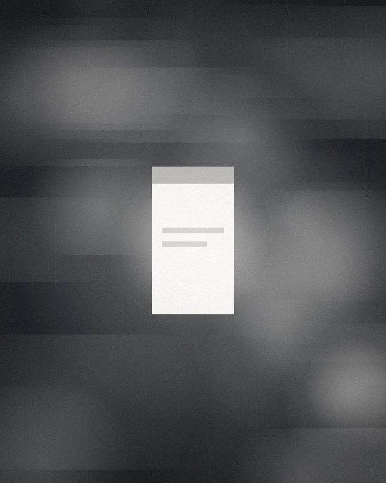

IMAGEDigital Marketing Agency
21→23
We Help Your Business Grow Online!
Our team of experts uses cutting-edge strategies to maximize your ROI and take your brand to the next level.
كل عنصر تفاعلي في هذه الصفحة يحمل تسمية على المؤشر تشرح ما يفعله: VIEW · DRAG · PLAY · HOLD · SWITCH · OPEN. إن كنت على شاشة لمس، التسمية تظهر كتلميح صغير أعلى العنصر. وهناك أشياء لا تظهر إلا لمن يبحث — جرّب الضغط على الشعار خمس مرات، أو اكتب WAVE.
لا نبيع مساحة إعلانية ولا وعوداً. نقرأ سلوك الطلب في السوق العراقي — التوقيت، النطاق، وزمن الوصول — ونحوّل القراءة إلى خطة وسائط قابلة للتنفيذ غداً.

SRC · MOTION TRAIL [ 0.86 · 0.47 ] MOVEلا نبدأ بالكرييتف، ولا نعِد بـ«زيادة المتابعين»، ولا نُسلّم تقريراً يحتاج مترجماً.
نقيس ثلاثة أبعاد للطلب — متى، أين، وبأي سرعة — ثم نبني الخطة والكرييتف على القراءة.
كل قرار موثّق برقم وتاريخ. إذا سقط الرقم، نغيّر القرار — لا نغيّر الرواية.
بدّل المدى الزمني، اختر حملة، اسحب على المنحنى، رتّب الجدول. كل رقم يُعاد حسابه فوراً — والقراءة في الأسفل تُكتب من الأرقام نفسها، لا من نصّ محفوظ.
DRAG THE CHARTHOVER OR DRAG · ARROW KEYS WHEN FOCUSED
| TREND |
|---|
—
—
نبدأ من بطاقة إعلانية عادية تماماً — من النوع الذي تراه كل يوم. اسحب الشريط، وشاهد كل قرار وهو يُطبَّق، مع سببه ومع الـ token الذي تغيّر.
DRAG OR PRESS PLAY
IMAGEOur team of experts uses cutting-edge strategies to maximize your ROI and take your brand to the next level.
بطاقة تعمل، لكنها لا تقول شيئاً: خط النظام الافتراضي، تدرّج بنفسجي بلا معنى، كل شيء في المنتصف، وزرّ يقول «اعرف المزيد» دون أن يعرف أحد ماذا سيعرف.
/* no tokens — hard-coded values */
كل ما تغيّره هنا يُطبَّق على الصفحة كاملة في اللحظة نفسها — لأن لا مكوّن واحد في هذا الموقع يعرف لوناً أو مقاساً ثابتاً. كلها tokens.
TUNE ANYTHINGكل حجم = الحجم الذي قبله × النسبة. تغيير رقم واحد يعيد بناء الهرم كله.
نقرأ سلوك الطلب في السوق العراقي — التوقيت، النطاق، وزمن الوصول — ونحوّل القراءة إلى خطة وسائط قابلة للتنفيذ غداً. الطباعة العربية هنا ليست ترجمة لتصميم لاتيني؛ الوزن والتتبّع والارتفاع كلها مضبوطة على شكل الحرف العربي أولاً.
الألوان هنا أدوار (ground · ink · signal) لا قيَم. لهذا تستطيع اللوحة الخامسة أن تكون وضع تباين عالٍ للوصولية دون أن يتغيّر سطر واحد في أي مكوّن — ونسب التباين المكتوبة أعلاه محسوبة الآن، لا مكتوبة يدوياً.
المقياس كله مبني على وحدة 4px. الكثافة تضرب الوحدة، فتتغيّر كل المسافات معاً بنسبة واحدة.
الطلب يبلغ ذروته اليومية بين التاسعة والحادية عشرة مساءً، بينما تنتهي معظم جداول الصرف عند السادسة.
لاحظ أن الإيقاع لا ينكسر عند أي كثافة: كل مسافة ما زالت مضاعفاً للوحدة، فالخطوط الأفقية للأساس تبقى محترمة.
نفس الست بطاقات، نفس الـ HTML، ثلاث نوايا تحريرية مختلفة. الشبكة ليست تنظيماً للمحتوى فقط — هي التي تقول أيّ بطاقة أهم من غيرها.
الزرّ المغناطيسي يقترب من المؤشر؛ زرّ «اطلب القراءة» يمرّ بحالات loading → success → idle كما يفعل في الإنتاج.
تدقيق كامل للحساب: أين يُنفق البُدجت، وأين يوجد الطلب.
READING 01 · TIMING

IMAGE الشبكة تُصوّت قبل الجمهور.قراءة شهرية + سلسلة كرييتف + إدارة حملة.
OPEN →التحقّق يحدث عند مغادرة الحقل لا عند كل حرف — الخطأ يُقال مرّة واحدة، وفي مكانه.
الحركة عامل ضرب على منظومة مدد واحدة. لا يوجد رقم زمن واحد مكتوب داخل أي مكوّن.
الحركة تُستخدم هنا لثلاثة أشياء فقط: أن تشرح من أين جاء العنصر، أن تربط سبباً بنتيجة، وأن تعطي وقتاً للعين لتلحق. أي حركة لا تفعل واحداً من هذه الثلاثة تُحذف.
في وضع الحركة المخفّضة لا نحذف المعنى — نستبدل الانتقال بتغيّر فوري في الحالة. كل شيء يبقى مفهوماً بلا حركة واحدة، وهذا هو الاختبار الحقيقي للتسلسل الهرمي.
اسحب الحافّة الحمراء. الواجهة في الداخل تقيس نفسها لا نافذة المتصفّح — لهذا تتصرّف كأنها فعلاً على جهاز بذلك العرض. راقب ما يتغيّر في القائمة على اليمين عند كل نقطة انكسار.
DRAG THE EDGEقراءة واحدة، رقم واحد، وقرار قابل للتنفيذ غداً.
القرارات هنا ليست تجميلية: ترتيب الصورة يتغيّر لأن الأولوية على الموبايل هي الرسالة لا الصورة، والقصّ يتحوّل إلى ٤:٥ لأن الشاشة عمودية، والأزرار تصبح بعرض كامل لأن الإبهام يصل إلى أسفل الشاشة لا إلى منتصفها.
التصميم ليس ذوقاً. كل قرار هنا له مقابل قابل للقياس — مسافة الإبهام، عدد محطات المسح البصري، ما يظهر فوق الحد. اضغط A / B وقارن.
SWITCH A / BPROBLEM الزائر يقرأ العنوان ثم النص ثم يقرّر. إن كان الزرّ أسفل كل شيء وفي المنتصف، فهو يخرج من مسار العين ويسقط تحت الحد على الشاشات الصغيرة.
DECISION A زرّ في المنتصف أسفل البطاقة — الشكل الشائع، متوازن بصرياً.
نطاق الطلب الفعلي يمتد إلى ١٢ كم عبر شبكات التوصيل، بينما يتوقف الاستهداف عند ٣ كم حول الموقع.
PROBLEM حين يتساوى العنوان مع النص في الحجم واللون، تفقد العين نقطة دخول، فتقرأ كل شيء أو لا تقرأ شيئاً — وعادة تختار الثانية.
DECISION A تباين ضعيف: العنوان أكبر بقليل، ونفس الوزن تقريباً.
كل ثانية تحميل إضافية تقصّ نسبة من المشاهدة؛ عند الثالثة يكون نصف الجمهور قد خرج قبل الرسالة.
PROBLEM لوحة القياس ليست مقالاً. من يفتحها يومياً يريد المقارنة بنظرة واحدة، ومن يفتحها شهرياً يريد أن يفهم. الكثافة الصحيحة تعتمد على أيّهما.
DECISION A كثيف جداً: أكبر عدد من الصفوف، خط أصغر، مسافات مضغوطة.
PROBLEM نفس الفلاتر التي تعمل بدقّة على سطح المكتب تصبح على الموبايل رهاناً: الإبهام أعرض من ٢٨ بكسل، والخطأ يعني تغيير الفلتر الخاطئ ثم الرجوع.
DECISION A الحجم المنقول كما هو من سطح المكتب: ٢٨ × ٢٨ بكسل، متلاصقة.
المنطقة المريحة للإبهام على شاشة ٣٩٠ بكسل تبدأ من أسفل الشاشة بحدود ٥٦٠ بكسل — كل ما فوقها يحتاج إعادة قبض الجهاز.
لا شيء هنا زخرفة. كل تجربة مكتوبة بـ JavaScript خالص وتتحرّك على transform وopacity فقط — وكلها تعمل باللمس كما تعمل بالفأرة.
TOUCH ANYTHINGالطلب يبلغ ذروته اليومية بين التاسعة والحادية عشرة مساءً، بينما تنتهي معظم جداول الصرف عند السادسة.
نطاق الطلب الفعلي يمتد إلى ١٢ كم عبر شبكات التوصيل، بينما يتوقف الاستهداف عند ٣ كم حول الموقع.
كل ثانية تحميل إضافية تقصّ نسبة من المشاهدة؛ عند الثالثة يكون نصف الجمهور قد خرج قبل الرسالة.
ثلاث لقطات، مادة واحدة: من الكادر الخام إلى الأثر إلى القراءة. هذا ما نُنتجه لكل حلقة — والشريط يتقدّم وحده إن تركته.
SWITCH BEATSهذه هي نفس اللوحة التي يستلمها العميل، بنفس القراءة وبنفس اللغة. الأعمدة قابلة للتنقّل بلوحة المفاتيح.
HOVER · TAP · ARROWSتبدأ من أي نقطة — لكن لا ننفّذ حملة قبل أن تكون القراءة على الطاولة.
PRICES IN IQD · LAUNCH IS ONE-OFF · INDEX IS MONTHLY · GROWTH PARTNER IS SCOPED
إن لم تجد سؤالك، اكتبه في نموذج التواصل — نجيب في اليوم نفسه.
القراءة الأولى بلا مقابل ولا التزام: كشف واحد، ثلاث توصيات مرتبة بالأثر، ومكالمة عشرين دقيقة.
وصلنا طلبك. نرجع لك بالقراءة خلال ٤٨ ساعة عمل.
القراءة القادمة تُنشر كل سبت على @adspulse.iq — بلا إعلان، بلا نداء شراء، رقم واحد فقط.